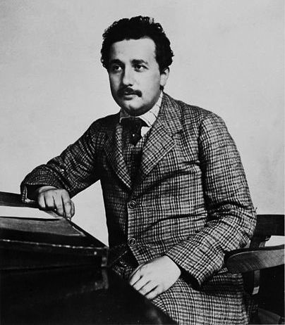
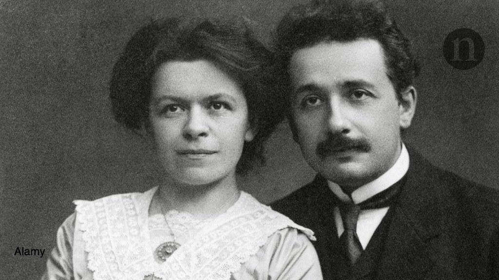

Albert Einstein (/ˈaɪnstaɪn/ EYEN-styne;[4] German: [ˈalbɛʁt ˈʔaɪnʃtaɪn] (About this soundlisten); 14 March 1879 – 18 April 1955) was a German-born theoretical physicist,[5] widely acknowledged to be one of the greatest physicists of all time. Einstein is known for developing the theory of relativity, but he also made important contributions to the development of
the theory of quantum mechanics. Relativity and quantum mechanics are together the two pillars of modern physics.[3][6] His mass–energy equivalence formula E = mc2, which arises from relativity theory, has been dubbed "the world's most famous equation".[7] His work is also known for its influence on the philosophy of science.[8][9] He received the 1921 Nobel Prize in Physics "for his services to theoretical physics, and especially for his discovery of the law of the photoelectric effect",[10] a pivotal step in the development of quantum theory. His intellectual achievements and originality resulted in "Einstein" becoming synonymous with "genius".
In 1905, a year sometimes described as his annus mirabilis ('miracle year'), Einstein published four groundbreaking papers.[12] These outlined the theory of the photoelectric effect, explained Brownian motion, introduced special relativity, and demonstrated mass-energy equivalence. Einstein thought that the laws of classical mechanics could no longer be reconciled with those of the electromagnetic field, which led him to develop his special theory of relativity. He then extended the theory to gravitational fields; he published a paper on general relativity in 1916, introducing his theory of gravitation. In 1917, he applied the general theory of relativity to model the structure of the universe.[13][14] He continued to deal with problems of statistical mechanics and quantum theory, which led to his explanations of particle theory and the motion of molecules. He also investigated the thermal properties of light and the quantum theory of radiation, which laid the foundation of the photon theory of light. However, for much of the later part of his career, he worked on two ultimately unsuccessful endeavors. First, despite his great contributions to quantum mechanics, he opposed what it evolved into, objecting that nature "does not play dice".[15] Second, he attempted to devise a unified field theory by generalizing his geometric theory of gravitation to include electromagnetism. As a result, he became increasingly isolated from the mainstream of modern physics.
Einstein was born in the German Empire, but moved to Switzerland in 1895, forsaking his German citizenship (as a subject of the Kingdom of Württemberg)[note 1] the following year. In 1897, at the age of 17, he enrolled in the mathematics and physics teaching diploma program at the Swiss Federal polytechnic school in Zürich, graduating in 1900. In 1901 he acquired Swiss citizenship, which he kept for the rest of his life, and in 1903 he secured a permanent position at the Swiss Patent Office in Bern. In 1905, he was awarded a PhD by the University of Zurich. In 1914, Einstein moved to Berlin in order to join the Prussian Academy of Sciences and the Humboldt University of Berlin. In 1917, Einstein became director of the Kaiser Wilhelm Institute for Physics; he also became a German citizen again – Prussian this time.
In 1933, while Einstein was visiting the United States, Adolf Hitler came to power. Einstein did not return to Germany because he objected to the policies of the newly elected Nazi-led government.[16] He settled in the United States and became an American citizen in 1940.[17] On the eve of World War II, he endorsed a letter to President Franklin D. Roosevelt alerting him to the potential German nuclear weapons program and recommending that the US begin similar research. Einstein supported the Allies, but generally denounced the idea of nuclear weapons.
Life and Career
Albert Einstein (/ˈaɪnstaɪn/ EYEN-styne;[4] German: [ˈalbɛʁt ˈʔaɪnʃtaɪn] (About this soundlisten); 14 March 1879 – 18 April 1955) was a German-born theoretical physicist,[5] widely acknowledged to be one of the greatest physicists of all time. Einstein is known for developing the theory of relativity, but he also made important contributions to the development of the theory of quantum mechanics. Relativity and quantum mechanics are together the two pillars of modern physics.[3][6] His mass–energy equivalence formula E = mc2, which arises from relativity theory, has been dubbed "the world's most famous equation".[7] His work is also known for its influence on the philosophy of science.[8][9] He received the 1921 Nobel Prize in Physics "for his services to theoretical physics, and especially for his discovery of the law of the photoelectric effect",[10] a pivotal step in the development of quantum theory. His intellectual achievements and originality resulted in "Einstein" becoming synonymous with "genius".
In 1905, a year sometimes described as his annus mirabilis ('miracle year'), Einstein published four groundbreaking papers.[12] These outlined the theory of the photoelectric effect, explained Brownian motion, introduced special relativity, and demonstrated mass-energy equivalence. Einstein thought that the laws of classical mechanics could no longer be reconciled with those of the electromagnetic field, which led him to develop his special theory of relativity. He then extended the theory to gravitational fields; he published a paper on general relativity in 1916, introducing his theory of gravitation. In 1917, he applied the general theory of relativity to model the structure of the universe.[13][14] He continued to deal with problems of statistical mechanics and quantum theory, which led to his explanations of particle theory and the motion of molecules. He also investigated the thermal properties of light and the quantum theory of radiation, which laid the foundation of the photon theory of light. However, for much of the later part of his career, he worked on two ultimately unsuccessful endeavors. First, despite his great contributions to quantum mechanics, he opposed what it evolved into, objecting that nature "does not play dice".[15] Second, he attempted to devise a unified field theory by generalizing his geometric theory of gravitation to include electromagnetism. As a result, he became increasingly isolated from the mainstream of modern physics.
Einstein was born in the German Empire, but moved to Switzerland in 1895, forsaking his German citizenship (as a subject of the Kingdom of Württemberg)[note 1] the following year. In 1897, at the age of 17, he enrolled in the mathematics and physics teaching diploma program at the Swiss Federal polytechnic school in Zürich, graduating in 1900. In 1901 he acquired Swiss citizenship, which he kept for the rest of his life, and in 1903 he secured a permanent position at the Swiss Patent Office in Bern. In 1905, he was awarded a PhD by the University of Zurich. In 1914, Einstein moved to Berlin in order to join the Prussian Academy of Sciences and the Humboldt University of Berlin. In 1917, Einstein became director of the Kaiser Wilhelm Institute for Physics; he also became a German citizen again – Prussian this time.
In 1933, while Einstein was visiting the United States, Adolf Hitler came to power. Einstein did not return to Germany because he objected to the policies of the newly elected Nazi-led government.[16] He settled in the United States and became an American citizen in 1940.[17] On the eve of World War II, he endorsed a letter to President Franklin D. Roosevelt alerting him to the potential German nuclear weapons program and recommending that the US begin similar research. Einstein supported the Allies, but generally denounced the idea of nuclear weapons.

At age 13, when he had become more seriously interested in philosophy (and music),[29] Einstein was introduced to Kant's Critique of Pure Reason. Kant became his favorite philosopher, his tutor stating: "At the time he was still a child, only thirteen years old, yet Kant's works, incomprehensible to ordinary mortals, seemed to be clear to him."[27]
In 1895, at the age of 16, Einstein took the entrance examinations for the Swiss Federal polytechnic school in Zürich (later the Eidgenössische Technische Hochschule, ETH). He failed to reach the required standard in the general part of the examination,[30] but obtained exceptional grades in physics and mathematics.[31] On the advice of the principal of the polytechnic school, he attended the Argovian cantonal school (gymnasium) in Aarau, Switzerland, in 1895 and 1896 to complete his secondary schooling. While lodging with the family of professor Jost Winteler, he fell in love with Winteler's daughter, Marie. Albert's sister Maja later married Winteler's son Paul.[32] In January 1896, with his father's approval, Einstein renounced his citizenship in the German Kingdom of Württemberg to avoid military service.[33] In September 1896, he passed the Swiss Matura with mostly good grades, including a top grade of 6 in physics and mathematical subjects, on a scale of 1–6.[34] At 17, he enrolled in the four-year mathematics and physics teaching diploma program at the Federal polytechnic school. Marie Winteler, who was a year older, moved to Olsberg, Switzerland, for a teaching post.[32]
Einstein's matriculation certificate at the age of 17. The heading translates as "The Education Committee of the Canton of Aargau". His scores were German 5, French 3, Italian 5, History 6, Geography 4, Algebra 6, Geometry 6, Descriptive Geometry 6, Physics 6, Chemistry 5, Natural History 5, Art Drawing 4, Technical Drawing 4. 6 = very good, 5 = good, 4 = sufficient, 3 = insufficient, 2 = poor, 1 = very poor.
Einstein's matriculation certificate
Einstein's future wife, a 20-year-old Serbian named Mileva Marić, also enrolled at the polytechnic school that year. She was the only woman among the six students in the mathematics and physics section of the teaching diploma course. Over the next few years, Einstein's and Marić's friendship developed into a romance, and they spent countless hours debating and reading books together on extra-curricular physics in which they were both interested. Einstein wrote in his letters to Marić that he preferred studying alongside her.[35] In 1900, Einstein passed the exams in Maths and Physics and was awarded the Federal teaching diploma.[36] There is eyewitness evidence and several letters over many years that indicate Marić might have collaborated with Einstein prior to his 1905 papers,[35][37][38] known as the Annus Mirabilis papers, and that they developed some of the concepts together during their studies, although some historians of physics who have studied the issue disagree that she made any substantive contributions
Early correspondence between Einstein and Marić was discovered and published in 1987 which revealed that the couple had a daughter named "Lieserl", born in early 1902 in Novi Sad where Marić was staying with her parents. Marić returned to Switzerland without the child, whose real name and fate are unknown. The contents of Einstein's letter in September 1903 suggest that the girl was either given up for adoption or died of scarlet fever in infancy.[43][44]
Einstein, looking relaxed and holding a pipe, stands next to a smiling, well-dressed Elsa who is wearing a fancy hat and fur wrap. She is looking at him.
Einstein with his second wife, Elsa, in 1921
Einstein and Marić married in January 1903. In May 1904, their son Hans Albert Einstein was born in Bern, Switzerland. Their son Eduard was born in Zürich in July 1910. The couple moved to Berlin in April 1914, but Marić returned to Zürich with their sons after learning that despite their close relationship before,[35] Einstein's chief romantic attraction was now his cousin Elsa Löwenthal;[45] she was his first cousin maternally and the second cousin paternally.[46] They divorced on 14 February 1919, having lived apart for five years.[47][48] As part of the divorce settlement, Einstein transferred his Nobel Prize fund to Marić when he won it.[49] Eduard had a breakdown at about age 20 and was diagnosed with schizophrenia.[50] His mother cared for him and he was also committed to asylums for several periods, finally being committed permanently after her death.[51]
In letters revealed in 2015, Einstein wrote to his early love Marie Winteler about his marriage and his strong feelings for her. He wrote in 1910, while his wife was pregnant with their second child: "I think of you in heartfelt love every spare minute and am so unhappy as only a man can be." He spoke about a "misguided love" and a "missed life" regarding his love for Marie.
Einstein married Elsa Löwenthal in 1919,[53][54] after having a relationship with her since 1912.[46] They emigrated to the United States in 1933. Elsa was diagnosed with heart and kidney problems in 1935 and died in December 1936.[55]
In 1923, Einstein fell in love with a secretary named Betty Neumann, the niece of a close friend, Hans Mühsam.[56][57][58][59] In a volume of letters released by Hebrew University of Jerusalem in 2006,[60] Einstein described about six women, including Margarete Lebach (a blonde Austrian), Estella Katzenellenbogen (the rich owner of a florist business), Toni Mendel (a wealthy Jewish widow) and Ethel Michanowski (a Berlin socialite), with whom he spent time and from whom he received gifts while being married to Elsa.[61][62] Later, after the death of his second wife Elsa, Einstein was briefly in a relationship with Margarita Konenkova.[63] Konenkova was a Russian spy who was married to the noted Russian sculptor Sergei Konenkov (who created the bronze bust of Einstein at the Institute for Advanced Study at Princeton).
Early correspondence between Einstein and Marić was discovered and published in 1987 which revealed that the couple had a daughter named "Lieserl", born in early 1902 in Novi Sad where Marić was staying with her parents. Marić returned to Switzerland without the child, whose real name and fate are unknown. The contents of Einstein's letter in September 1903 suggest that the girl was either given up for adoption or died of scarlet fever in infancy.[43][44]
Einstein, looking relaxed and holding a pipe, stands next to a smiling, well-dressed Elsa who is wearing a fancy hat and fur wrap. She is looking at him.
Einstein with his second wife, Elsa, in 1921
Einstein and Marić married in January 1903. In May 1904, their son Hans Albert Einstein was born in Bern, Switzerland. Their son Eduard was born in Zürich in July 1910. The couple moved to Berlin in April 1914, but Marić returned to Zürich with their sons after learning that despite their close relationship before,[35] Einstein's chief romantic attraction was now his cousin Elsa Löwenthal;[45] she was his first cousin maternally and the second cousin paternally.[46] They divorced on 14 February 1919, having lived apart for five years.[47][48] As part of the divorce settlement, Einstein transferred his Nobel Prize fund to Marić when he won it.[49] Eduard had a breakdown at about age 20 and was diagnosed with schizophrenia.[50] His mother cared for him and he was also committed to asylums for several periods, finally being committed permanently after her death.[51]
In letters revealed in 2015, Einstein wrote to his early love Marie Winteler about his marriage and his strong feelings for her. He wrote in 1910, while his wife was pregnant with their second child: "I think of you in heartfelt love every spare minute and am so unhappy as only a man can be." He spoke about a "misguided love" and a "missed life" regarding his love for Marie.[52]
Einstein married Elsa Löwenthal in 1919,[53][54] after having a relationship with her since 1912.[46] They emigrated to the United States in 1933. Elsa was diagnosed with heart and kidney problems in 1935 and died in December 1936.[55]
In 1923, Einstein fell in love with a secretary named Betty Neumann, the niece of a close friend, Hans Mühsam.[56][57][58][59] In a volume of letters released by Hebrew University of Jerusalem in 2006,[60] Einstein described about six women, including Margarete Lebach (a blonde Austrian), Estella Katzenellenbogen (the rich owner of a florist business), Toni Mendel (a wealthy Jewish widow) and Ethel Michanowski (a Berlin socialite), with whom he spent time and from whom he received gifts while being married to Elsa.[61][62] Later, after the death of his second wife Elsa, Einstein was briefly in a relationship with Margarita Konenkova.[63] Konenkova was a Russian spy who was married to the noted Russian sculptor Sergei Konenkov (who created the bronze bust of Einstein at the Institute for Advanced Study at Princeton).
After graduating in 1900, Einstein spent almost two frustrating years searching for a teaching post. He acquired Swiss citizenship in February 1901,[66] but was not conscripted for medical reasons. With the help of Marcel Grossmann's father, he secured a job in Bern at the Swiss Patent Office,[67][68] as an assistant examiner – level III.[69][70] Einstein evaluated patent applications for a variety of devices including a gravel sorter and an electromechanical typewriter.[70] In 1903, his position at the Swiss Patent Office became permanent, although he was passed over for promotion until he "fully mastered machine technology".[71] Much of his work at the patent office related to questions about transmission of electric signals and electrical-mechanical synchronization of time, two technical problems that show up conspicuously in the thought experiments that eventually led Einstein to his radical conclusions about the nature of light and the fundamental connection between space and time.[12] Three young men in suits with high white collars and bow ties, sitting. Olympia Academy founders: Conrad Habicht, Maurice Solovine and Einstein With a few friends he had met in Bern, Einstein started a small discussion group in 1902, self-mockingly named "The Olympia Academy", which met regularly to discuss science and philosophy. Sometimes they were joined by Mileva who attentively listened but did not participate.[72] Their readings included the works of Henri Poincaré, Ernst Mach, and David Hume, which influenced his scientific and philosophical outlook
After graduating in 1900, Einstein spent almost two frustrating years searching for a teaching post. He acquired Swiss citizenship in February 1901,[66] but was not conscripted for medical reasons. With the help of Marcel Grossmann's father, he secured a job in Bern at the Swiss Patent Office,[67][68] as an assistant examiner – level III.[69][70]
Einstein evaluated patent applications for a variety of devices including a gravel sorter and an electromechanical typewriter.[70] In 1903, his position at the Swiss Patent Office became permanent, although he was passed over for promotion until he "fully mastered machine technology".[71]
Much of his work at the patent office related to questions about transmission of electric signals and electrical-mechanical synchronization of time, two technical problems that show up conspicuously in the thought experiments that eventually led Einstein to his radical conclusions about the nature of light and the fundamental connection between space and time.[12]
Three young men in suits with high white collars and bow ties, sitting.
Olympia Academy founders: Conrad Habicht, Maurice Solovine and Einstein
With a few friends he had met in Bern, Einstein started a small discussion group in 1902, self-mockingly named "The Olympia Academy", which met regularly to discuss science and philosophy. Sometimes they were joined by Mileva who attentively listened but did not participate.[72] Their readings included the works of Henri Poincaré, Ernst Mach, and David Hume, which influenced his scientific and philosophical outlook
<
Einstein became a full professor at the German Charles-Ferdinand University in Prague in April 1911, accepting Austrian citizenship in the Austro-Hungarian Empire to do so.[79][80] During his Prague stay, he wrote 11 scientific works, five of them on radiation mathematics and on the quantum theory of solids. In July 1912, he returned to his alma mater in Zürich. From 1912 until 1914, he was a professor of theoretical physics at the ETH Zurich, where he taught analytical mechanics and thermodynamics. He also studied continuum mechanics, the molecular theory of heat, and the problem of gravitation, on which he worked with mathematician and friend Marcel Grossmann.[81]
When the "Manifesto of the Ninety-Three" was published in October 1914—a document signed by a host of prominent German intellectuals that justified Germany's militarism and position during the First World War—Einstein was one of the few German intellectuals to rebut its contents and sign the pacifistic "Manifesto to the Europeans".[82]
The New York Times reported confirmation of "the Einstein theory" (specifically, the bending of light by gravitation) based on 29 May 1919 eclipse observations in Principe (Africa) and Sobral (Brazil), after the findings were presented on 6 November 1919 to a joint meeting in London of the Royal Society and the Royal Astronomical Society.[83] (Full text)
On 3 July 1913, he became a member of the Prussian Academy of Sciences in Berlin. Max Planck and Walther Nernst visited him the next week in Zurich to persuade him to join the academy, additionally offering him the post of director at the Kaiser Wilhelm Institute for Physics, which was soon to be established.[84] Membership in the academy included paid salary and professorship without teaching duties at Humboldt University of Berlin. He was officially elected to the academy on 24 July, and he moved to Berlin the following year. His decision to move to Berlin was also influenced by the prospect of living near his cousin Elsa, with whom he had started a romantic affair. He joined the academy and thus Berlin University[clarification needed] on 1 April 1914.[clarification needed][85] As World War I broke out that year, the plan for Kaiser Wilhelm Institute for Physics was aborted. The institute was established on 1 October 1917, with Einstein as its director.[86] In 1916, Einstein was elected president of the German Physical Society (1916–1918).[87]
Based on calculations Einstein had made in 1911 using his new theory of general relativity, light from another star should be bent by the Sun's gravity. In 1919, that prediction was confirmed by Sir Arthur Eddington during the solar eclipse of 29 May 1919. Those observations were published in the international media, making Einstein world-famous. On 7 November 1919, the leading British newspaper The Times printed a banner headline that read: "Revolution in Science – New Theory of the Universe – Newtonian Ideas Overthrown".[88]
In 1920, he became a Foreign Member of the Royal Netherlands Academy of Arts and Sciences.[89] In 1922, he was awarded the 1921 Nobel Prize in Physics "for his services to Theoretical Physics, and especially for his discovery of the law of the photoelectric effect".[10] While the general theory of relativity was still considered somewhat controversial, the citation also does not treat even the cited photoelectric work as an explanation but merely as a discovery of the law, as the idea of photons was considered outlandish and did not receive universal acceptance until the 1924 derivation of the Planck spectrum by S. N. Bose. Einstein was elected a Foreign Member of the Royal Society (ForMemRS) in 1921.[3] He also received the Copley Medal from the Royal Society in 1925
Einstein visited New York City for the first time on 2 April 1921, where he received an official welcome by Mayor John Francis Hylan, followed by three weeks of lectures and receptions.[90] He went on to deliver several lectures at Columbia University and Princeton University, and in Washington, he accompanied representatives of the National Academy of Science on a visit to the White House. On his return to Europe he was the guest of the British statesman and philosopher Viscount Haldane in London, where he met several renowned scientific, intellectual, and political figures, and delivered a lecture at King's College London.[91][92]
He also published an essay, "My First Impression of the U.S.A.", in July 1921, in which he tried briefly to describe some characteristics of Americans, much as had Alexis de Tocqueville, who published his own impressions in Democracy in America (1835).[93] For some of his observations, Einstein was clearly surprised: "What strikes a visitor is the joyous, positive attitude to life ... The American is friendly, self-confident, optimistic, and without envy."[94]
In 1922, his travels took him to Asia and later to Palestine, as part of a six-month excursion and speaking tour, as he visited Singapore, Ceylon and Japan, where he gave a series of lectures to thousands of Japanese. After his first public lecture, he met the emperor and empress at the Imperial Palace, where thousands came to watch. In a letter to his sons, he described his impression of the Japanese as being modest, intelligent, considerate, and having a true feel for art.[95] In his own travel diaries from his 1922–23 visit to Asia, he expresses some views on the Chinese, Japanese and Indian people, which have been described as xenophobic and racist judgments when they were rediscovered in 2018.[96][97]
Because of Einstein's travels to the Far East, he was unable to personally accept the Nobel Prize for Physics at the Stockholm award ceremony in December 1922. In his place, the banquet speech was made by a German diplomat, who praised Einstein not only as a scientist but also as an international peacemaker and activist.[98]
On his return voyage, he visited Palestine for 12 days, his only visit to that region. He was greeted as if he were a head of state, rather than a physicist, which included a cannon salute upon arriving at the home of the British high commissioner, Sir Herbert Samuel. During one reception, the building was stormed by people who wanted to see and hear him. In Einstein's talk to the audience, he expressed happiness that the Jewish people were beginning to be recognized as a force in the world.[99]
Einstein visited Spain for two weeks in 1923, where he briefly met Santiago Ramón y Cajal and also received a diploma from King Alfonso XIII naming him a member of the Spanish Academy of Sciences.[100]
Albert Einstein at a session of the International Committee on Intellectual Cooperation (League of Nations) of which he was a member from 1922 to 1932.
From 1922 to 1932, Einstein was a member of the International Committee on Intellectual Cooperation of the League of Nations in Geneva (with a few months of interruption in 1923–1924),[101] a body created to promote international exchange between scientists, researchers, teachers, artists, and intellectuals.[102] Originally slated to serve as the Swiss delegate, Secretary-General Eric Drummond was persuaded by Catholic activists Oskar Halecki and Giuseppe Motta to instead have him become the German delegate, thus allowing Gonzague de Reynold to take the Swiss spot, from which he promoted traditionalist Catholic values.[103] Einstein's former physics professor Hendrik Lorentz and the Polish chemist Marie Curie were also members of the committee.
In December 1930, Einstein visited America for the second time, originally intended as a two-month working visit as a research fellow at the California Institute of Technology. After the national attention, he received during his first trip to the US, he and his arrangers aimed to protect his privacy. Although swamped with telegrams and invitations to receive awards or speak publicly, he declined them all.[104]
After arriving in New York City, Einstein was taken to various places and events, including Chinatown, a lunch with the editors of The New York Times, and a performance of Carmen at the Metropolitan Opera, where he was cheered by the audience on his arrival. During the days following, he was given the keys to the city by Mayor Jimmy Walker and met the president of Columbia University, who described Einstein as "the ruling monarch of the mind".[105] Harry Emerson Fosdick, pastor at New York's Riverside Church, gave Einstein a tour of the church and showed him a full-size statue that the church made of Einstein, standing at the entrance.[105] Also during his stay in New York, he joined a crowd of 15,000 people at Madison Square Garden during a Hanukkah celebration.[105]
Einstein (left) and Charlie Chaplin at the Hollywood premiere of City Lights, January 1931
Einstein next traveled to California, where he met Caltech president and Nobel laureate Robert A. Millikan. His friendship with Millikan was "awkward", as Millikan "had a penchant for patriotic militarism", where Einstein was a pronounced pacifist.[106] During an address to Caltech's students, Einstein noted that science was often inclined to do more harm than good.[107]
This aversion to war also led Einstein to befriend author Upton Sinclair and film star Charlie Chaplin, both noted for their pacifism. Carl Laemmle, head of Universal Studios, gave Einstein a tour of his studio and introduced him to Chaplin. They had an instant rapport, with Chaplin inviting Einstein and his wife, Elsa, to his home for dinner. Chaplin said Einstein's outward persona, calm and gentle, seemed to conceal a "highly emotional temperament", from which came his "extraordinary intellectual energy".[108]
Chaplin's film, City Lights, was to premiere a few days later in Hollywood, and Chaplin invited Einstein and Elsa to join him as his special guests. Walter Isaacson, Einstein's biographer, described this as "one of the most memorable scenes in the new era of celebrity".[107] Chaplin visited Einstein at his home on a later trip to Berlin and recalled his "modest little flat" and the piano at which he had begun writing his theory. Chaplin speculated that it was "possibly used as kindling wood by the Nazis
A month later, Einstein's works were among those targeted by the German Student Union in the Nazi book burnings, with Nazi propaganda minister Joseph Goebbels proclaiming, "Jewish intellectualism is dead."[113] One German magazine included him in a list of enemies of the German regime with the phrase, "not yet hanged", offering a $5,000 bounty on his head.[113][116] In a subsequent letter to physicist and friend Max Born, who had already emigrated from Germany to England, Einstein wrote, "... I must confess that the degree of their brutality and cowardice came as something of a surprise."[113] After moving to the US, he described the book burnings as a "spontaneous emotional outburst" by those who "shun popular enlightenment", and "more than anything else in the world, fear the influence of men of intellectual independence".[117]
Einstein was now without a permanent home, unsure where he would live and work, and equally worried about the fate of countless other scientists still in Germany. He rented a house in De Haan, Belgium, where he lived for a few months. In late July 1933, he went to England for about six weeks at the personal invitation of British naval officer Commander Oliver Locker-Lampson, who had become friends with Einstein in the preceding years. Locker-Lampson invited him to stay near his Cromer home in a wooden cabin on Roughton Heath in the Parish of Roughton, Norfolk. To protect Einstein, Locker-Lampson had two bodyguards watch over him at his secluded cabin, with a photo of them carrying shotguns and guarding Einstein, published in the Daily Herald on 24 July 1933.[118][119]
Locker-Lampson took Einstein to meet Winston Churchill at his home, and later, Austen Chamberlain and former Prime Minister Lloyd George.[120] Einstein asked them to help bring Jewish scientists out of Germany. British historian Martin Gilbert notes that Churchill responded immediately, and sent his friend, physicist Frederick Lindemann, to Germany to seek out Jewish scientists and place them in British universities.[121] Churchill later observed that as a result of Germany having driven the Jews out, they had lowered their "technical standards" and put the Allies' technology ahead of theirs.[121]
Einstein later contacted leaders of other nations, including Turkey's Prime Minister, İsmet İnönü, to whom he wrote in September 1933 requesting placement of unemployed German-Jewish scientists. As a result of Einstein's letter, Jewish invitees to Turkey eventually totaled over "1,000 saved individuals".[122]
Locker-Lampson also submitted a bill to parliament to extend British citizenship to Einstein, during which period Einstein made a number of public appearances describing the crisis brewing in Europe.[123] In one of his speeches he denounced Germany's treatment of Jews, while at the same time he introduced a bill promoting Jewish citizenship in Palestine, as they were being denied citizenship elsewhere.[124] In his speech he described Einstein as a "citizen of the world" who should be offered a temporary shelter in the UK.[note 3][125] Both bills failed, however, and Einstein then accepted an earlier offer from the Institute for Advanced Study, in Princeton, New Jersey, US, to become a resident scholar.
In 1939, a group of Hungarian scientists that included émigré physicist Leó Szilárd attempted to alert Washington to ongoing Nazi atomic bomb research. The group's warnings were discounted. Einstein and Szilárd, along with other refugees such as Edward Teller and Eugene Wigner, "regarded it as their responsibility to alert Americans to the possibility that German scientists might win the race to build an atomic bomb, and to warn that Hitler would be more than willing to resort to such a weapon."[132][133] To make certain the US was aware of the danger, in July 1939, a few months before the beginning of World War II in Europe, Szilárd and Wigner visited Einstein to explain the possibility of atomic bombs, which Einstein, a pacifist, said he had never considered.[134] He was asked to lend his support by writing a letter, with Szilárd, to President Roosevelt, recommending the US pay attention and engage in its own nuclear weapons research.
The letter is believed to be "arguably the key stimulus for the U.S. adoption of serious investigations into nuclear weapons on the eve of the U.S. entry into World War II".[135] In addition to the letter, Einstein used his connections with the Belgian Royal Family[136] and the Belgian queen mother to get access with a personal envoy to the White House's Oval Office. Some say that as a result of Einstein's letter and his meetings with Roosevelt, the US entered the "race" to develop the bomb, drawing on its "immense material, financial, and scientific resources" to initiate the Manhattan Project.
For Einstein, "war was a disease ... [and] he called for resistance to war." By signing the letter to Roosevelt, some argue he went against his pacifist principles.[137] In 1954, a year before his death, Einstein said to his old friend, Linus Pauling, "I made one great mistake in my life—when I signed the letter to President Roosevelt recommending that atom bombs be made; but there was some justification—the danger that the Germans would make them ..."[138] In 1955, Einstein and ten other intellectuals and scientists, including British philosopher Bertrand Russell, signed a manifesto highlighting the danger of nuclear weapons.

Einstein became an American citizen in 1940. Not long after settling into his career at the Institute for Advanced Study in Princeton, New Jersey, he expressed his appreciation of the meritocracy in American culture when compared to Europe. He recognized the "right of individuals to say and think what they pleased", without social barriers, and as a result, individuals were encouraged, he said, to be more creative, a trait he valued from his own early education.[140]
Einstein joined the National Association for the Advancement of Colored People (NAACP) in Princeton, where he campaigned for the civil rights of African Americans. He considered racism America's "worst disease",[116][141] seeing it as "handed down from one generation to the next".[142] As part of his involvement, he corresponded with civil rights activist W. E. B. Du Bois and was prepared to testify on his behalf during his trial in 1951.[143] When Einstein offered to be a character witness for Du Bois, the judge decided to drop the case.[144]
In 1946 Einstein visited Lincoln University in Pennsylvania, a historically black college, where he was awarded an honorary degree. Lincoln was the first university in the United States to grant college degrees to African Americans; alumni include Langston Hughes and Thurgood Marshall. Einstein gave a speech about racism in America, adding, "I do not intend to be quiet about it."[145] A resident of Princeton recalls that Einstein had once paid the college tuition for a black student.[144] Einstein has said "Being a Jew myself, perhaps I can understand and empathize with how black people feel as victims of discrimination
Einstein was a figurehead leader in helping establish the Hebrew University of Jerusalem,[147] which opened in 1925 and was among its first Board of Governors. Earlier, in 1921, he was asked by the biochemist and president of the World Zionist Organization, Chaim Weizmann, to help raise funds for the planned university.[148] He also submitted various suggestions as to its initial programs.
Among those, he advised first creating an Institute of Agriculture in order to settle the undeveloped land. That should be followed, he suggested, by a Chemical Institute and an Institute of Microbiology, to fight the various ongoing epidemics such as malaria, which he called an "evil" that was undermining a third of the country's development.[149] Establishing an Oriental Studies Institute, to include language courses given in both Hebrew and Arabic, for scientific exploration of the country and its historical monuments, was also important.[150]
Einstein was not a nationalist; he was against the creation of an independent Jewish state, which would be established without his help as Israel in 1948. Einstein felt that Jews could live alongside native Arabs in Palestine. His views were not shared by the majority of Jews seeking to form a new country; as a result, Einstein was limited to a marginal role in the Zionist movement.[151]
Chaim Weizmann later became Israel's first president. Upon his death while in office in November 1952 and at the urging of Ezriel Carlebach, Prime Minister David Ben-Gurion offered Einstein the position of President of Israel, a mostly ceremonial post.[152][153] The offer was presented by Israel's ambassador in Washington, Abba Eban, who explained that the offer "embodies the deepest respect which the Jewish people can repose in any of its sons".[154] Einstein declined, and wrote in his response that he was "deeply moved", and "at once saddened and ashamed" that he could not accept it
Einstein was a figurehead leader in helping establish the Hebrew University of Jerusalem,[147] which opened in 1925 and was among its first Board of Governors. Earlier, in 1921, he was asked by the biochemist and president of the World Zionist Organization, Chaim Weizmann, to help raise funds for the planned university.[148] He also submitted various suggestions as to its initial programs.
Among those, he advised first creating an Institute of Agriculture in order to settle the undeveloped land. That should be followed, he suggested, by a Chemical Institute and an Institute of Microbiology, to fight the various ongoing epidemics such as malaria, which he called an "evil" that was undermining a third of the country's development.[149] Establishing an Oriental Studies Institute, to include language courses given in both Hebrew and Arabic, for scientific exploration of the country and its historical monuments, was also important.[150]
Einstein was not a nationalist; he was against the creation of an independent Jewish state, which would be established without his help as Israel in 1948. Einstein felt that Jews could live alongside native Arabs in Palestine. His views were not shared by the majority of Jews seeking to form a new country; as a result, Einstein was limited to a marginal role in the Zionist movement.[151]
Chaim Weizmann later became Israel's first president. Upon his death while in office in November 1952 and at the urging of Ezriel Carlebach, Prime Minister David Ben-Gurion offered Einstein the position of President of Israel, a mostly ceremonial post.[152][153] The offer was presented by Israel's ambassador in Washington, Abba Eban, who explained that the offer "embodies the deepest respect which the Jewish people can repose in any of its sons".[154] Einstein declined, and wrote in his response that he was "deeply moved", and "at once saddened and ashamed" that he could not accept it
On 17 April 1955, Einstein experienced internal bleeding caused by the rupture of an abdominal aortic aneurysm, which had previously been reinforced surgically by Rudolph Nissen in 1948.[179] He took the draft of a speech he was preparing for a television appearance commemorating the state of Israel's seventh anniversary with him to the hospital, but he did not live to complete it.[180]
Einstein refused surgery, saying, "I want to go when I want. It is tasteless to prolong life artificially. I have done my share; it is time to go. I will do it elegantly."[181] He died in Princeton Hospital early the next morning at the age of 76, having continued to work until near the end.[182]
During the autopsy, the pathologist of Princeton Hospital, Thomas Stoltz Harvey, removed Einstein's brain for preservation without the permission of his family, in the hope that the neuroscience of the future would be able to discover what made Einstein so intelligent.[183] Einstein's remains were cremated in Trenton, New Jersey,[184] and his ashes were scattered at an undisclosed location.[185][186]
In a memorial lecture delivered on 13 December 1965 at UNESCO headquarters, nuclear physicist J. Robert Oppenheimer summarized his impression of Einstein as a person: "He was almost wholly without sophistication and wholly without worldliness ... There was always with him a wonderful purity at once childlike and profoundly stubborn."[187]
Einstein bequeathed his personal archives, library and intellectual assets to the Hebrew University of Jerusalem in Israel